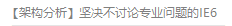

关于编程¶
文本来自于QPython编程群
感谢【架构分析】坚决不讨论专业问题的IE6 大佬
自测题¶
- 随便拿来一个软件/功能，绝大多数情况下能否正确推测出背后的实现原理。
- 能不能在5天/7天/10天/30天内
- 用一个新的框架（所有时间-2）开发出一个最小模型
- 在之前没接触过/没有知识储备的情况下做出app/网站/小程序/3d游戏的最小模型.....
- 能不能看出计算机每层之间东西的关联以及设计思想，比如路由器和消息队列。
- 是否熟悉常用的语言的虚拟机 / 编译器，和框架从内存对象布局到部分代码实现原理再到GC，从框架实现原理到设计思想，解决问题。
- 对计算机网络，计算机组成，编译原理，数据结构有一定了解，能够进行多学科联动的问题分析和性能分析以及问题查找。（重点是联动分析）
- 是否具备严谨的分析问题的能力，比如单一变量原则，假说演绎推理。
- 是否能够知道什么该优化，什么不该优化，用最小代价换最大收益。
什么叫编程¶
编程其实只是在做两件事：解决问题以及，更好的解决问题。
不管是写代码，抄开源项目，造轮子，拖拽开发出app，都是为了解决问题。
只要能解决问题，没有对错。
代码说到底就是工具的一种。能解决问题就是及格的解决方案。
如果你用代码解决不出来你要解决的问题，那你就是不如用拖拽开发的。
更好的解决问题是一种进阶能力，用更好的算法能不能提高识别准确率，用更新的框架是不是能换来更优秀的响应速度。我能不能通过优化提高我解决问题的速度和质量。
什么叫编程能力及格¶
1。能把实际问题抽象，然后用计算机来描述和解决问题。
2。可以称自己为xxx语言程序员，但是不恐惧写任何语言任何项目的代码。从来不会觉得：这个我不会所以做不了。
3。能够进行简单的性能分析，分析，不是瞎想。我看过太多通过瞎想判断性能的自以为是的人了。这需要对自己的代码，语言实现有一定了解。
4。有基础的debug和分析问题的能力。不会虾球测试代码。
什么叫编程能力优秀¶
在写代码的时候能不借助调试器（对就是说我（逃）），通过报错以及出现的状况判断是哪个地方出问题了（也算黑盒测试的一种？）
能够进行性能分析，找出性能瓶颈，这里涉及的知识点就更多了，计算机基础知识，整体化思想（从上到下寻找性能瓶颈。开始于代码（业务逻辑代码），终止于代码（CPU级别），对业务的熟悉。
什么叫会编程呢¶
（至少同龄人里我没见过任何人跟我思考一样的问题。）
能够做出决定：
- 到底该不该采取这个优化
- 什么时候重构代码
- 到底该不该升级框架
这个要考虑的方面太多了，开发成本，时间成本，风险，协调性。
有一些优化是没意义的/次要矛盾。而大家都喜欢抓着看得到的东西优化。
如果你一句都看不懂，慢慢学python吧。
如果你就看得懂几句，说明你根本没入门编程。
如果你能理解大部分内容，说明学习方向还算正确，可以继续按照这样的方向学下去。
文本来自于QPython编程群
感谢【架构分析】坚决不讨论专业问题的IE6大佬
